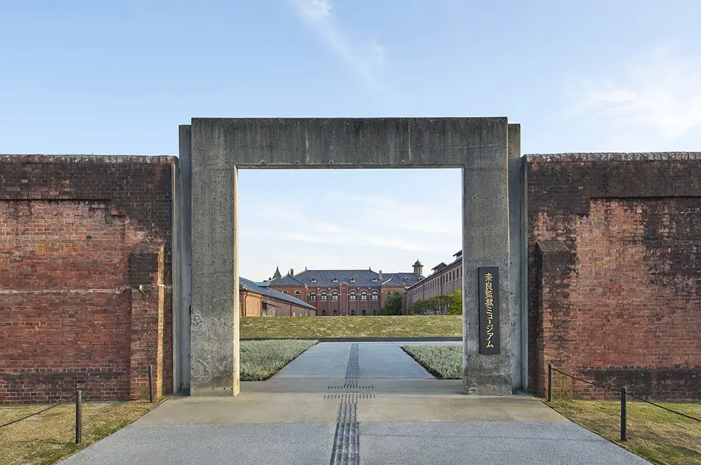
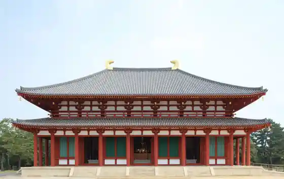
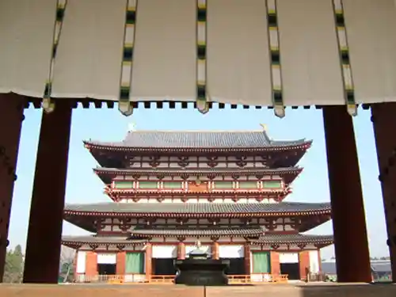
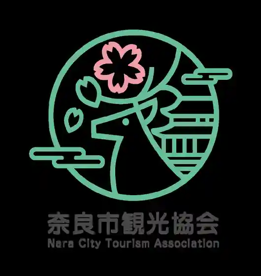
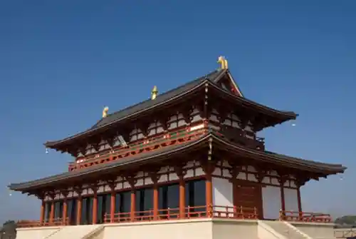

Nara
Nara · Nara
Nara
Highlighted on the Nara map.

Sights
Nara Kangoku Museum by Hoshino Resort
Kofuku Tera

Yakushiji

Nara Tourism Association

Nara Kyuseki

Todaiji
Nara Park
Hokke Tera
Taian Tera
Kasugataisha
to Shodai Tera
Todaiji Nigatsu Do
Nara National Museum
Gango Tera
Fuku In
Ryosen Tera
Saidaiji
Ippan Zaidanhojin Toyo Minzoku Museum
Fukuchi In
Kairyu Oji
Byakugo Tera
Shujaku Mon
Todaiji Hokke Do (Sangatsu Do)
Roadside Station Kurosuei Nakamachi
Ippan Zaidanhojin Nara Ken Bijitazubyuro
Kofuku In
Goko In
Fu Ken Do
Shoryaku Tera
Obi Kai Tera
Historic Site Zuto
Wakakusa Yama
Kinryu Yama Futai Tera
Konin Tera
Enjo Tera
Akishinodera
Yoshiki Sono
Hannya Tera
Koeki Zaidanhojin Yamato Bunka Kan
Kasuga Yamahara Shi Hayashi
Kasugataisha Kokuho Dono
Kozen Tera
Meisho Isui Sono
Nara Bunkazai Kenkyusho Nara Kyuseki Museum
Koeki Zaidanhojin Shohaku Art Museum
Nara Tsubi Ko Shrine
Yoshimitsu Tera
Himuro Shrine (Nara)
Kofuku Tera Kokuho Kan
Jigan Tera
Sarusawa Ike
Todaiji Kaidan Do
Den Kodera
Nara Prefectural Yagaikatsudo Center
Todaiji Sogo Bunka Center (Todaiji Museum)
Nara Prefectural Art Museum
Irie Yasushi Kikki Nen Nara Shashin Art Museum
Kasugataisha Manyo Botanical Garden
Naramachi
Tera
Ten Yuki Ishidate Shrine
Nara Art Museum
Tamuke Yama Hachiman Shrine
Nara Kasugano Kokusai Foramu Bo
Uguisu Falls
Kofuku Tera Togane Do
Shinyakushiji
Tayasu Man Ryo Haka (Tayasu Man Ryo Haka)
Shujaku Mon Hiroba
Nara Ken (Kencho)
Daiichiji Taikyoku Dono, Fukuhara Jigyo Johokan
Gatsugase Baikei
Daiichiji Taikyoku Dono In Taikyoku Mon (Minamimon)
Kofuku Tera Kita Endo
Yagyu Itto Ishi
Uneme Shrine
Todaiji Shoro
Jigokudani Sekkutsu Hotoke
Koen Yama
Nara Kyuseki Toin Garden, Iko Tenjikan
Shosoin
Sugawara Tenmangu Shrine
Yahashira Shrine (Nara Ue Fukagawa Town)
Saidaiji Seijo In
Takisaka no Michi
Goryo Shrine
Yasaka Shrine (Nara Oyasu Town)
Roadside Station Hari T R S
Imanishi Kasho In
Todaiji Tegai Mon
Nara Machi Karakuriomocha Kan
Ju Wa In
Nara Prefectural Tosho Johokan
Kubikiri Jizo
Meisho Kyu Daijo In Garden
Kasugataisha Keidai Rokuon Kakuki Ri Ba
Kofuku Tera Minami Endo
Isagawa Shrine
Nara Naramachi Center
Gokoku Shrine
Gemboku Shiitake Sono Kyuchu
Nara Machi Museum
Art Museum Inoe Hiromichi Memorial Museum
Suinin Ryo Burial Mound (Horai Yama Burial Mound)
Todaiji Kaisan Do
Yahashira Shrine (Nara Ogura Town)
Uwanabe Burial Mound Konabe Burial Mound
Koshin Do
Nara Kogei Kan
Koeki Zaidanhojin Nakano Art Museum
Kasuga Yamaishi Kutsu Hotoke (Ana Hotoke)
Nara 100 Nen Hall
Tsuge Suibun Shrine
Obuchi Ike Park
Nara Kanko Boranteiagaido no Kai
Nara Ken Culture Hall
Kan Kuni Shrine (Hayashi Shrine)
Seimu Ryo Burial Mound (Ishizuka Yama Burial Mound)
Kataoka Umebayashi
Nara Sugioka Hanamura Shodo Art Museum
Yugengaisha Ganko Ittetsu Nagaya Sumi no Museum
Yagyu Hana Shobu Sono
E Man
Nara Gakuen Seminahausu Shiga Naoya Kyukyo
San Ryobo Kofun Gun
Yuhi Kannon
Gyararii Faburiru
Iwa Yuki Hime Ryo Burial Mound (Hishage Yama Burial Mound)
Hibasuhime Ryo Burial Mound (Ryo Yama Burial Mound)
Asahi Kannon
Gango Tera Bunkazai Kenkyusho Sogo Bunkazai Center
Nara Denryoku Ko no Ike Park (Ko no Ike Sports Park)
Kyu Yagyu Han Jinya Ato
Sekai no Kankyo Kyosei Jutaku Mokei Tenji · Menshin Shisutemu Hoka